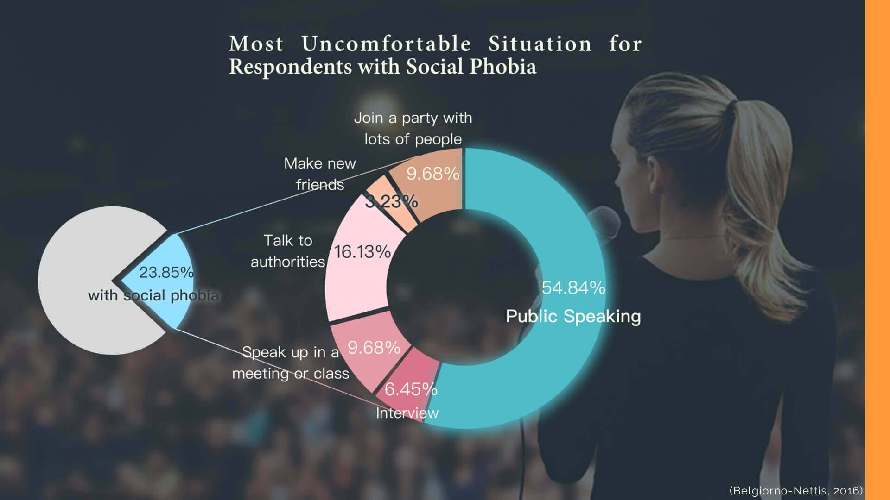
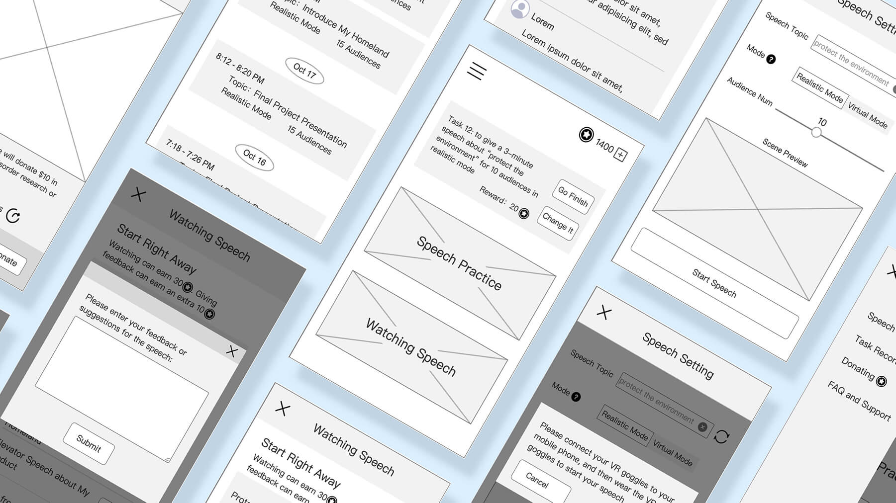
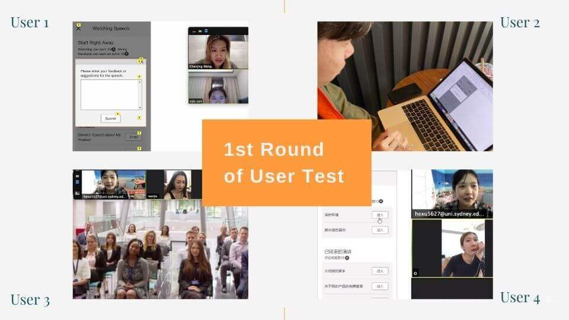

VR + App Interface Design
Real - Virtual - Real
Design Brief
Digital inclusion and social participation are getting more and more attention by the
society.
Among the marginal groups, the social participation of social anxiety disorder patients is low, they
suffers in many
social occasions.
We hoped to explore and develop a design solution with digital and interactive
technologies to
fosters digital inclusion
and social participation with social anxiety disorder group.
We found through research that public speaking is the most fearful occasion for this
group. Our
design focuses on
helping them improve their symptoms in that situation.
High Fidelity Protype Demo Video
Tools
Axure Sketch AE
Team Member
Chenjing Wang ; Heyan Xu
My Responsibilities
Participate in finding existing design
Participate in user research (interview and questionnare)
Organize interview materials & make affinity diagram
Organize questionnare materials and make charts
Analyze user needs and make Persona
Find traditional treatments
Participate in brainstorming and concept design
Low fidelity prototyping by Axure and AE
Participate in user testing（interview, usability testing, think-aloud protocol）
Participate in concept refinement
High fidelity prototyping by Sketch
1. Online background research about user group and existing design
Online background research about user group and existing design
User research (interview and questionnare)
Making affinity diagram to organize interview material

Making graphs to organize questionaire material
Analyzing user needs & making Persona

Research on existng digital design solutions and traditional treatments
Brainstorming to generate ideas

Low-fidelity prototyping

1st round of user test (interview, SUS, think-aloud protocol)
Concept improvement and modifying low-fidelity prototype
2nd round of user test (interview, SUS, think-aloud protocol)
High-fidelity prototyping by Sketch
The Biggest Challenge
Our first concept is high-tech glasses. After wearing them, the faces of the
audience will be replaced by the faces of
people users are familiar with or cartoon characters users like.
However, through the communication with our tutor, we found that the concept is not
solving problems, but helping users
to avoid problems. So we abandoned this concept.
After searching for a lot of traditional treatments, I incorporated a lot of
traditional treatments that have proven
effective in the new concept, such as Exposure Therapy, Performance Feedback Treatment. Therefore, the
new concept would
be more practical and effective.
Result
We finally produced an effective, easy-to-use high fidelity prototype
Reflection
In the design of high-tech solutions, it is not enough to look for existing
high-tech or digital solutions. The
traditional solutions are worth learning.
When designing applications, adding game elements and reward mechanism can promote user participation
and improve user
experience.